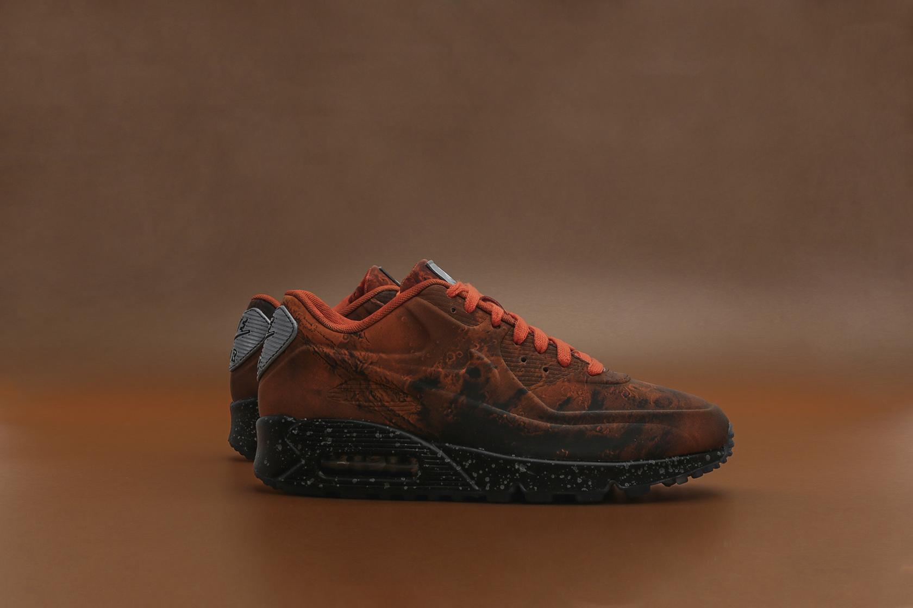
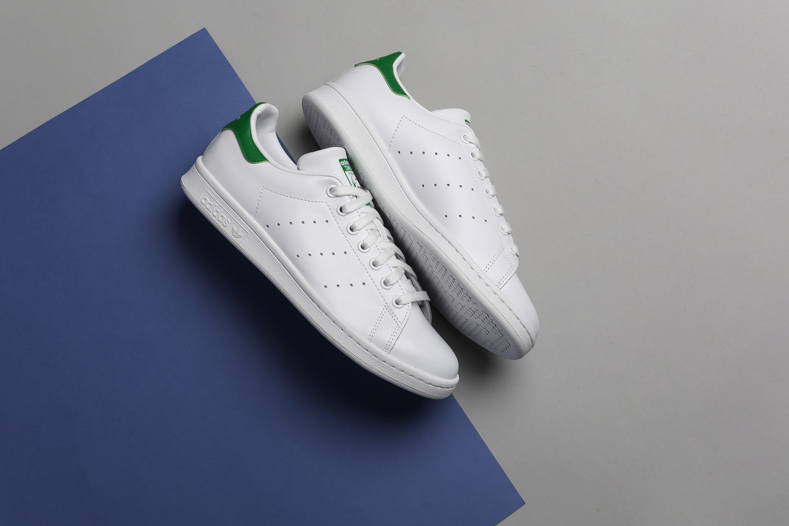

Собрали несколько пар на мокрую весну. Пора выбрать свежие кроссовки и начать их носить.
Оглавление топа:
- Air Jordan 9
- Nike Air Max 90 'Mars Landing'
- Nike Air Max 98
- Nike React WR ISPA
- Puma Cell Endura
- Adidas Stan Smith
Air Jordan 9
Кроссовки с верхом из кожи просто не могут не подойти на весну. В новой поставке к нам приехала вот такая яркая пара Air Jordan 9, собранная из премиальной кожи. Мы сразу поняли, что это идеальная модель на весну. В таких кроссовках можно и выглядеть круто, и покорять городские лужи без опасения, что ноги промокнут насквозь.

Nike Air Max 90 'Mars Landing'
Шикарный лимитированный релиз остался в нескольких размерах. Пора взять себе эти марсоходы для наших улиц. Поспешите, потому что может случиться так, что по ссылке ниже вы сможете найти пустую страницу без размеров. Бронируйте пару, пока она есть.
Nike Air Max 98
В прошлом году эти кроссовки отмечали свой 20-й день рождения. В тот год было несколько интересных перевыпусков, а еще свежих пар, но на этом бренд не остановился и теперь подготовил еще порцию релизов. Самый весенний из них выполнен в черном цвете с кожаными вставками.

Nike React WR ISPA
Если вы любите вещи ACG, то вот этот свежий силуэт создан именно для вас. Передовые технологии, запоминающийся дизайн и превосходное чувство комфорта не так часто встречаются в одних кроссовках, но тут все сошлось идеально и вы уже можете протестировать пару.

Puma Cell Endura
Архивы брендов - кладезь всего самого интересного. Именно поэтому Puma активно туда заглядывает, что возродить свои флагманские модели прошлого и сделать их вновь актуальными. Точно такой же прием они провернули с моделью Cell Endura, которую мы смело можем назвать одной из самых интересных новинок от немецкого бренда. Пара идеально впишется в дождливую погоду.

Adidas Stan Smith
Никуда без классики от adidas. В этих кроссовках идеально все. Единственное, с чем вы можете помучаться, это белый кожаный верх - уж очень он маркий, но все равно кроссовки крайне благородно стареют, что придает им некого шарма.
